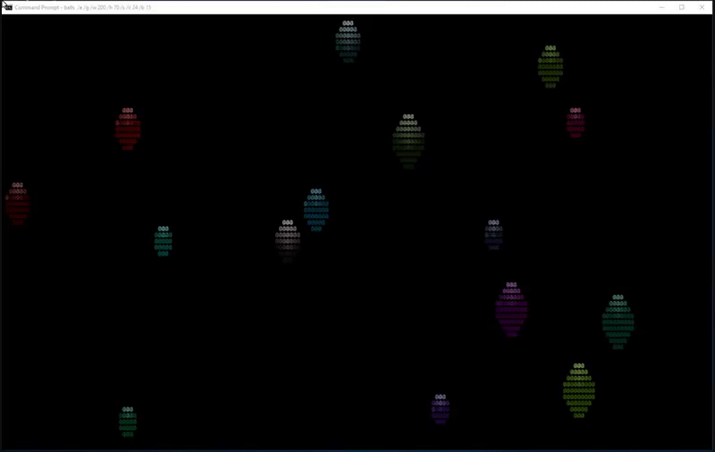

Well, the flicker was not gone - it was just dramatically reduced. Any algorithm that uses CLS to erase the previous frame will always introduce flicker because there is a moment in time when the screen is black. The larger the window, the more pronounced the flicker becomes. The problem is exacerbated when screen capture is used to record a movie of the action, because an entire frame may be captured when the screen is black, and the movie is likely at a slower frame rate than the screen. So when you capture a black screen, it becomes more of a blink than a flicker.
So I decided to do even more to reduce, if not eliminate, the flicker. I decided to provide an option to abandon CLS and instead each ball would be drawn by first plotting the ball in black at the former position (erase the prior position), then the ball would immediately be plotted in color at the new position. Once one ball was done, then it would move on to the next ball...
The ball erase method leads to some display artifacts when the erasure of ball 2 overwrites the plot of ball 1 - which looks sort of like a shadow, but it is not at all realistic. Thankfully the "shadow" disappears as the balls separate.
Since each ball gets plotted twice per frame, it slows things down. I decided to spend time further optimizing performance.
First off, there is no need to compute the circle pixels each and every frame. Instead I pre-compute a list of coordinates for each ball at position 0 with color and character information and store the list as a variable. Then the plot routine need only read the x,y coordinates and add the new origin. No need to compute the circle points every time. This makes a huge difference in performance. I do this in two phases - first I calculate the coordinates of a generic circle for each of the 3 supported sizes. Then in a 2nd loop I add the color (and character, though it happens to be constant) for each ball. Each string represents a sprite that simply needs to be translated to the correct position.
One additional major performance improvement is to limit the number of times x and y coordinates need to be translated. If there are consecutive horizontal pixels on the same line, then there is no need to compute x and y for each pixel - we just need the coordinates for the 1st pixel, and then the color and character for the contiguous pixels can be tacked on. This also significantly reduces storage string sizes and speeds up performance.
I also added an option to choose between 4 bit (16 colors), 8 bit (256 colors), or 24 bit (16,777,216 colors). The original version used a single color for each ball. But I added a cool option to apply a color gradient that gives a crude 3-D effect, especially when using 24 bit colors.
Performance got good enough that restricting the program to a single ball results in a frame rate that is too fast. So I added an option to wait a minimum amount of time between frames.
My prior version collected all the strings for each frame into a single variable that gets printed to screen all at once. But the string is limited to <8191 characters. So I refined the code to detect when a string is approaching the max length, and then I switch to a new string. So for each frame an "array" of strings gets cleared, then the strings are built, and finally plotted.
The BALLS.BAT program only plots "circles" (really they look like oblong Christmas ornaments to me). But the plot macro is designed to support plotting of pretty much any sprite that contains lists of coordinates with color and character info.
I kind of got carried away, and decided to parametize a bunch of additional configuration values, and provide command line arguments to control the options. Here is the output of the built in help that describes all the options:
Code: Select all
BALLS.BAT [/Option [Value]]...
/B Balls - Ball count (default 5)
/H Height - screen Height (default 50)
/W Width - screen Width (default 100)
/T cSec - min frame Time (default 0)
/X Char - piXel char (default @)
/C ColorBitCount - 4,8,24 (default 4)
/G - color Gradient
/S - Solid balls
/E - Erase balls instead of CLS
/P - Pause after each frame refresh
/D - Debug mode
/? - Help
Here is the actual code:
Code: Select all
@echo off
if "%~1"=="RUN" goto :run
if "%~1"=="LOOP" goto :loop
setlocal enableDelayedExpansion
:::
:::BALLS.BAT [/Option [Value]]...
:::
::: /B Balls - Ball count (default 5)
::: /H Height - screen Height (default 50)
::: /W Width - screen Width (default 100)
::: /T cSec - min frame Time (default 0)
::: /X Char - piXel char (default @)
::: /C ColorBitCount - 4,8,24 (default 4)
::: /G - color Gradient
::: /S - Solid balls
::: /E - Erase balls instead of CLS
::: /P - Pause after each frame refresh
::: /D - Debug mode
::: /? - Help
:::
:: Define options
set "options= -?: -S: -E: -P: -D: -G: -H:50 -W:100 -B:5 -C:4 -X:"@" -T:0 "
:: Set default option values
for %%O in (%options%) do for /f "tokens=1* delims=:" %%A in ("%%O") do set "%%A=%%~B"
:: Get options
:optionLoop
if not "%~1"=="" (
set "arg=%~1"
if "!arg:~0,1!" equ "/" set "arg=-!arg:~1!"
for /f delims^=^ eol^= %%A in ("!arg!") do set "test=!options:*%%A:=! "
if "!test!"=="!options! " (
>&2 echo Error: Invalid option %~1. Use %~nx0 -? to get help.
exit /b 1
) else if "!test:~0,1!"==" " (
set "!arg!=1"
if /i "!arg!" equ "-U" set "-z="
) else (
set "!arg!=%~2"
shift /1
)
shift /1
goto :optionLoop
)
if defined -? (
mode 50,25
for /f "delims=: tokens=*" %%A in ('findstr "^:::" "%~f0"') do echo(%%A
exit /b
)
:: Validate options and configure
set /a "ballCnt=4, ballCnt=%-B%-1" 2>nul
set /a "ht=50, ht=%-H%" 2>nul
set /a "wd=100, wd=%-W%" 2>nul
set /a "delay=0, delay=%-T%" 2>nul
set "validColorBits= 4 8 24 "
if "!validColorbits:%-C%=!" equ "!validColorBits!" set "-C=4"
if %ballCnt% lss 0 set "ballCnt=0"
if %ht% lss 20 set "ht=20"
if %wd% lss 20 set "wd=20"
if defined -X (set "-X=!-X:~0,1!") else set "-X=@"
if "!-X!"==" " set "-X=@"
if not defined -D mode %wd%,%ht%
:: ---- Define macros ----
(set LF=^
%= Empty line generates linefeed =%
)
set ^"\n=^^^%LF%%LF%^%LF%%LF%^^"
for /F %%a in ('echo prompt $E^| cmd') do set "ESC=%%a"
:: plot x y coordList buffer
set plot=for %%# in (1 2) do if %%#==2 ( for /f "tokens=1-4" %%1 in ("^!args^!") do (%\n%
for %%C in (^^!%%3^^!) do for /f "tokens=1-3" %%x in (%%C) do (%\n%
set /a "x=%%x+%%1, y=%%y+%%2"%\n%
set "screen%%4=^!screen%%4^!!esc![^!y^!;^!x^!H%%z"%\n%
)%\n%
)) else set args=
if defined -E ( %= Erase each ball before plotting generates shadow artifacts on prior balls =%
set "erase=!plot! ^!x%%b^! ^!y%%b^! ballEraser^!s%%b^! ^!si%%b^!"
set "cls="
) else ( %= Using CLS to clear all balls generates flicker =%
set "erase="
set "cls=cls"
)
if %delay% gtr 0 (
set "compute=1"
set "t1=0"
set "initDelay=if defined compute ("
set openDelay=set compute=^)%\n%
for /f "tokens=1-4 delims=:.," %%a in ("^!time: =0^!"^) do set /a "t2=(((1%%a*60)+1%%b)*60+1%%c)*100+1%%d-36610100, tDiff=t2-t1"%\n%
if ^^!tDiff^^! lss 0 set /a tDiff+=24*60*60*100%\n%
if ^^!tDiff^^! geq !delay! (
set "closeDelay=set compute=1&set t1=^!t2^!)"
) else (
set "initDelay="
set "openDelay="
set "closeDelay="
)
if defined -P (set "pause=pause >nul <con") else set "pause="
:: ---- End macros ----
:: Build list of relative pixel coordinates for all possible circle sizes - 2,3,4
:: Each circleN is a string in the format '"x1 y1" "x2 y2" ... "xn yn"'
:: 0 is the center of the circle
:: Also build ballErasers by adding color/character string to circle coordinates
for /l %%s in (2 1 4) do (
%== Build CircleN ==%
set "circle%%s="
for /l %%y in (-%%s,1,%%s) do for /l %%x in (-%%s,1,%%s) do (
set /a "s=%%x*%%x+%%y*%%y-%%s*%%s, _3div2=%%s/2"
if defined -S ( %== solid ball ==%
if !s! leq 1 (set circle%%s=!circle%%s! "%%x %%y")
) else ( %== outline ball ==%
if !s! geq -%%s if !s! leq !_3div2! (set circle%%s=!circle%%s! "%%x %%y")
)
)
if defined -E (
%== Build ballEraserN ==%
set priorX=100
set priorY=100
set "ballEraser%%s="
for %%C in (!circle%%s!) do for /f "tokens=1,2" %%x in ("%%~C") do (
set /a "1/(100*(%%x-!priorX!-1)+%%y-!priorY!)" 2>nul && (
%== New line ==%
set "ballEraser%%s=!ballEraser%%s!" "%%~C ."
) || (
%== Line continuation ==%
set "ballEraser%%s=!ballEraser%%s!."
)
set /a "priorX=%%x, priorY=%%y"
)
for /f "tokens=1,2*" %%a in ("!ballEraser%%s:~2!") do set "ballEraser%%s=%%a %%b !esc![30m%%c""
)
)
:: Build Yes and No files using local language
if not exist "%~f0.yes" (
for /f "delims=(/ tokens=2,3" %%A in (
'copy /-y nul "%~f0" ^<nul'
) do if not exist "%~f0.yes" (
>"%~f0.yes" echo %%A
>"%~f0.no" echo %%B
)
)
:: Initialize balls
set /a "screenCnt=size=0"
set "size2="
set "size3="
set "size4="
for /l %%B in (0,1,%ballCnt%) do (
set /a "x%%B=!random! %% (wd-10) + 10" %= x pos (col) =%
set /a "y%%B=!random! %% (ht-10) + 10" %= y pos (row) =%
set /a "i%%B=(!random!%%3+1)*(1-!random!%%2*2)" %= x delta (speed & angle) =%
set /a "j%%B=(!random!%%2+1)*(1-!random!%%2*2)" %= y delta (speed & angle) =%
set /a "s%%B=!random! %% 3 + 2" %= size =%
set /a "b%%B=ht - s%%B" %= screen bottom edge =%
set /a "r%%B=wd - s%%B" %= screen right edge =%
set /a "si%%B=screenCnt %= screen index =%
%== Build each ball "sprite" by adding color and pixel character to each coordinate pair in circleN ==%
set priorX=100
set priorY=100
set "ball%%B="
if defined -G ( %======= Color Gradient ======%
if %-C% == 4 ( %== 4 bit color ==%
set /a "c%%B=31+!random!%%7"
for %%S in (!s%%B!) do for %%C in (!circle%%S!) do for /f "tokens=1,2" %%x in ("%%~C") do (
set /a "c=c%%B+60*^!(-%%y&1<<31)"
set /a "1/(100*(%%x-!priorX!-1)+%%y-!priorY!)" 2>nul && (
%== New line ==%
set "ball%%B=!ball%%B!" "%%~C !esc![!c!m!-X!"
) || (
%== Line continuation ==%
set "ball%%B=!ball%%B!!-X!"
)
set /a "priorX=%%x, priorY=%%y"
)
)
if %-C% == 8 ( %== 8 bit color ==%
set /a "c%%B=16+!random!%%6*36+!random!%%6" %= compute random base color =%
set "xg=12/(s%%B*2+1), yg=2*12/(s%%B*2+1)" %= adjust x and y gradient factor by size =%
if defined -D echo c%%B=!c%%B!
for %%S in (!s%%B!) do for %%C in (!circle%%S!) do for /f "tokens=1,2" %%x in ("%%~C") do (
set /a "negX=^!^!(1<<31&%%x), absX=%%x*(1-2*negX), adj=((-%%y+4)*18/(s%%B*2+1)-absX*9/(s%%B*2+1))*6/17
if !adj! gtr 5 set "adj=5"
set /a "c=c%%B+adj*6"
if defined -D echo x=%%x y=%%y negX=!negX! absX=!absX! adj=!adj! c=!c!
set /a "1/(100*(%%x-!priorX!-1)+%%y-!priorY!)" 2>nul && (
%== New line ==%
set "ball%%B=!ball%%B!" "%%~C !esc![38;5;!c!m!-X!"
) || (
%== Line continuation ==%
set "ball%%B=!ball%%B!!esc![38;5;!c!m!-X!"
)
set /a "priorX=%%x, priorY=%%y"
)
)
if %-C% == 24 ( %== 24 bit color ==%
set /a "r=!random!%%60+76, g=!random!%%60+76, b=!random!%%60+76" %= randomly select starting point for each base color =%
set /a "rp=^!(!random!%%3), gp=^!rp*(!random!%%2), bp=^!(rp|gp)" %= randomly select 1 primary base color (never adjusted) =%
set /a "rc%%B=r, rc%%B-=^!rp*r/(!random!%%3)" 2>nul %= randomly adjust red base value by none, half or all unless red is primary =%
set /a "gc%%B=g, gc%%B-=^!gp*g/(!random!%%3)" 2>nul %= randomly adjust green base value the same way =%
set /a "bc%%B=b, bc%%B-=^!bp*b/(!random!%%3)" 2>nul %= randomly adjust blue base value the same way =%
set /a "xg=15*4/s%%B, yg=30*4/s%%B" %= adjust x and y gradient factor by size =%
if defined -D (
echo r=!r! g=!g! b=!b!
echo rp=!rp! gp=!gp! bp=!bp!
echo rc=!rc%%B! gc=!gc%%B! bc=!bc%%B!
echo(
)
for %%S in (!s%%B!) do for %%C in (!circle%%S!) do for /f "tokens=1,2" %%x in ("%%~C") do (
set /a "negX=^!^!(1<<31&%%x), absX=%%x*(1-2*negX), adj=-%%y*yg-absX*xg, r=rc%%B+adj, g=gc%%B+adj, b=bc%%B+adj"
set /a "1/(100*(%%x-!priorX!-1)+%%y-!priorY!)" 2>nul && (
%== New line ==%
set "ball%%B=!ball%%B!" "%%~C !esc![38;2;!r!;!g!;!b!m!-X!"
) || (
%== Line continuation ==%
set "ball%%B=!ball%%B!!esc![38;2;!r!;!g!;!b!m!-X!"
)
set /a "priorX=%%x, priorY=%%y"
)
)
set "ball%%B=!ball%%B:~2!""
) else ( %===== No Color Gradient =====%
if %-C% == 4 ( %== 4 bit color ==%
set /a "c%%B=31+!random!%%7 + 60*(!random!%%2)"
)
if %-C% == 8 ( %== 8 bit color ==%
set /a "c%%B=!random!%%255+1"
set "c%%B=38;5;!c%%B!"
)
if %-C% == 24 ( %== 24 bit color ==%
set /a "r=!random!%%240+16, g=!random!%%240+16, b=!random!%%240+16"
set "c%%B=38;2;!r!;!g!;!b!"
)
for %%S in (!s%%B!) do for %%C in (!circle%%S!) do for /f "tokens=1,2" %%x in ("%%~C") do (
set /a "1/(100*(%%x-!priorX!-1)+%%y-!priorY!)" 2>nul && (
%== New line ==%
set "ball%%B=!ball%%B!" "%%~C !-X!"
) || (
%== Line continuation ==%
set "ball%%B=!ball%%B!!-X!"
)
set /a "priorX=%%x, priorY=%%y"
)
for /f "tokens=1,2*" %%a in ("!ball%%B:~2!") do set "ball%%B=%%a %%b !esc![!c%%B!m%%c""
)
if not defined size!s%%B! (
set "screen0="
%plot% !r%%B! !b%%B! ballEraser!s%%B! 0
%plot% !r%%B! !b%%B! ball%%B 0
call :StrLen screen0 size!s%%B!
)
set /a size+=size!s%%B!
if !size! gtr 8175 set /a "screenCnt+=1, si%%B=screenCnt, size=size!s%%B!"
)
if defined -D (
if defined -E for %%S in (2 3 4) do echo ballEraser%%S=!ballEraser%%S:%esc%=ESC!
for /l %%B in (0 1 %ballCnt%) do echo ball%%B=!ball%%B:%esc%=ESC!
set maxPixelLen
set maxBallLen
set size
set screenCnt
pause
cls
)
:: Relaunch to run with input redirected to No
"%~f0" RUN <"%~f0.no"
:RUN
:: Hide the cursor
echo !esc![?25l
:: Run the main loop in new process with input redirected to Yes
cmd /c "%~f0" LOOP <"%~f0.yes"
:: Reset colors and show the cursor
echo !esc![0m!esc![?25h
cls
exit /b
:LOOP
setlocal enableDelayedExpansion
for /l %%# in () do (
%initDelay%
for /l %%n in (0 1 %screenCnt%) do set "screen%%n="
for /l %%b in (0,1,%ballCnt%) do (
%erase%
set /a "x%%b+=i%%b, y%%b+=j%%b"
if !x%%b! geq !r%%b! set /a "x%%b=r%%b, i%%b*=-1"
if !y%%b! geq !b%%b! set /a "y%%b=b%%b, j%%b*=-1"
if !x%%b! leq !s%%b! set /a "x%%b=s%%b, i%%b*=-1"
if !y%%b! leq !s%%b! set /a "y%%b=s%%b, j%%b*=-1"
%plot% !x%%b! !y%%b! ball%%b !si%%b!
)
%openDelay%
%cls%
for /l %%n in (0 1 %screenCnt%) do echo !screen%%n!!esc!A
%pause%
%closeDelay%
)
:StrLen string len -- returns the length of a string
:: -- string [in] - variable name containing the string being measured for length
:: -- len [out] - variable to be used to return the string length
:: Many thanks to 'sowgtsoi', but also 'jeb' and 'amel27' dostips forum users helped making this short and efficient
:$created 20081122 :$changed 20101116 :$categories StringOperation
:$source http://www.dostips.com
( SETLOCAL ENABLEDELAYEDEXPANSION
set "str=A!%~1!"&rem keep the A up front to ensure we get the length and not the upper bound
rem it also avoids trouble in case of empty string
set "len=0"
for /L %%A in (12,-1,0) do (
set /a "len|=1<<%%A"
for %%B in (!len!) do if "!str:~%%B,1!"=="" set /a "len&=~1<<%%A"
)
)
( ENDLOCAL & REM RETURN VALUES
IF "%~2" NEQ "" SET /a %~2=%len%
)
EXIT /b
And here is an example of what the output looks like with the original CLS method with flicker.
BALLS.BAT /B 15 /S /G /W 200 /H 70 /C 24
And here is the result when the /E option is added to use the erase mode instead of CLS.
BALLS.BAT /B 15 /S /G /W 200 /H 70 /C 24 /E

Dave Benham